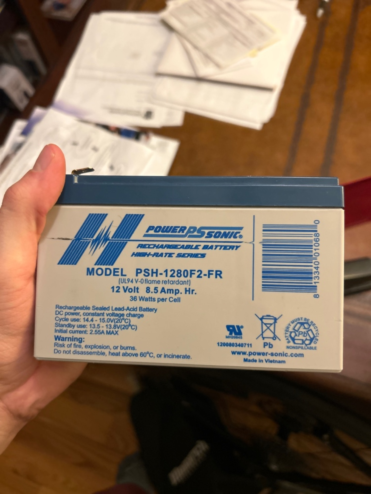
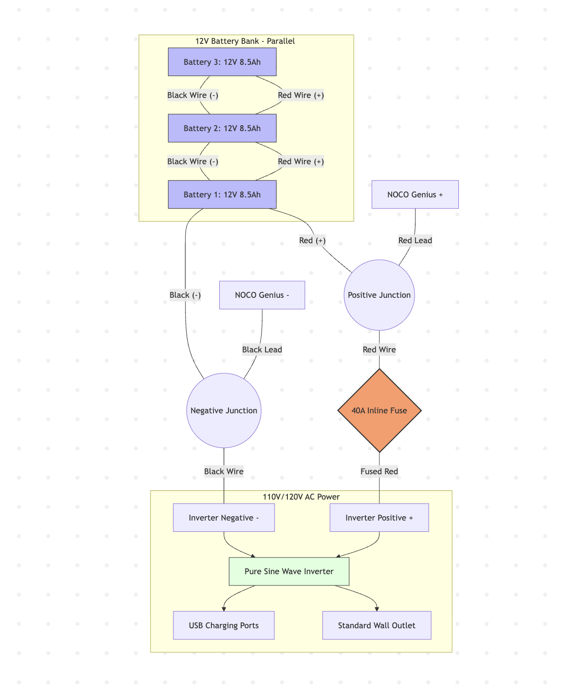
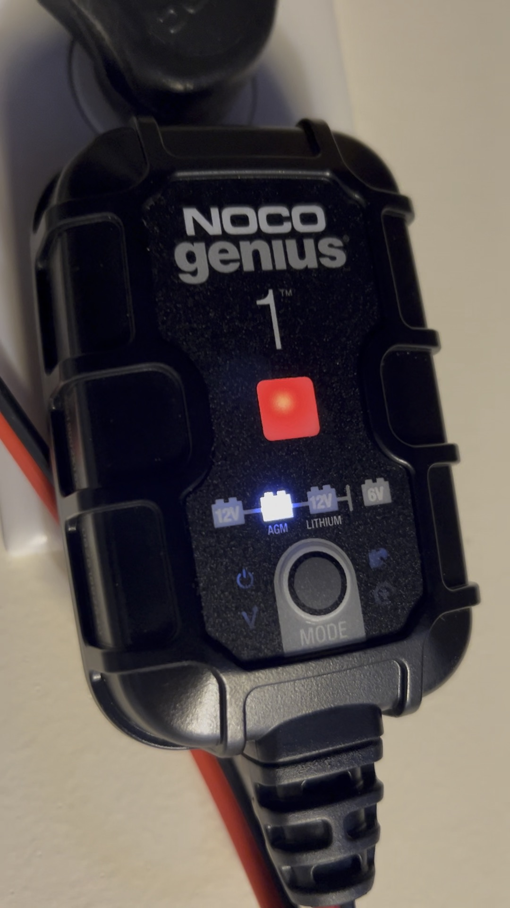
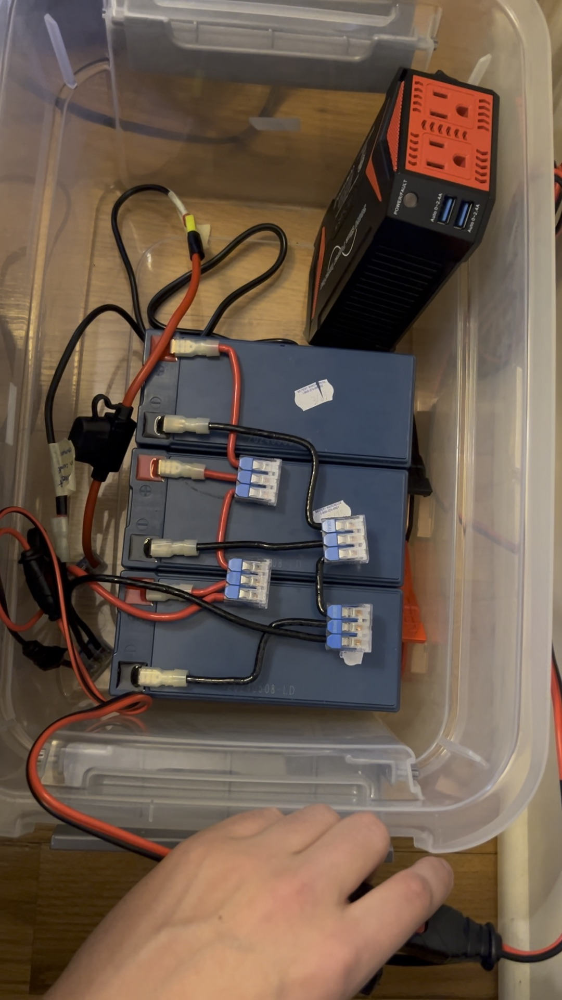

What do you do when you have 3 12V 8.5Ah lead acid batteries lying around? You build a monster backup power supply.
I wanted something that could actually run household electronics during a blackout. I found a 300W pure sine wave inverter and a few other parts and got to work.
I've never done this before so i consulted with google Gemini and got to work.
I started by wiring my three Power-Sonic batteries in parallel, which effectively tripled my capacity to 25.5Ah while keeping the system at a steady 12V.

The heart of the build is a 300W pure sine wave inverter. For safety I installed a 40A inline fuse on the positive line as close to the battery bank as possible to act as a fail-safe against short circuits.

Copy the Mermaid chart source →
To keep the batteries healthy I integrated a NOCO Genius 1 smart maintainer. This little 1A charger stays plugged in all the time and uses a dedicated AGM mode to float the batteries at 13.6V. This setup means my bank is always sitting at 100% capacity and ready to go.


Compared to a standard APC 650 unit, my DIY system actually has about 306Wh of total energy, roughly 3x the capacity of those entry-level store-bought backups.
Chris Trummer © 2026